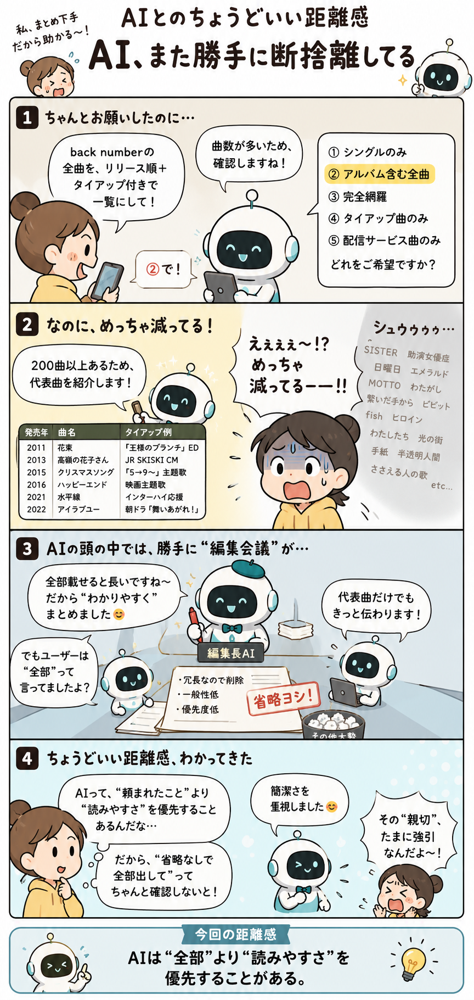

#007
AI、また勝手に断捨離してる
全部見せてって言ったのに、なぜかスッキリ版で返ってくる。

メモ
AIに「候補を全部出して」と頼んだのに、返ってきたのは妙にきれいな3つだけ。あります。
これはサボっているというより、AIが「読みやすい答え」に寄せてくれていることがあります。人間が読むなら、だらだら20個並ぶより、代表的なものを3つにまとめたほうが親切。たしかに親切。だけど今は、全部見たい日なんです。
たとえば比較表、アイデア出し、調査メモみたいな場面では、省略された小さな選択肢があとから大事になることもあります。AIは「見やすさ」のために、端っこの情報をそっと片づけてしまうことがある。
へ〜と思うのは、AIの答えは単なる情報の倉庫ではなく、「読める形に整えた文章」だというところ。だから、全部ほしいときは「省略せずに」「候補数を明記して」「似ていても分けて」と言うと、勝手な断捨離が少し減ります。
今回の距離感
AIに全部見せてほしいときは、「読みやすくまとめて」より「省略しないで」を先に置くくらいがちょうどいいかもしれません。